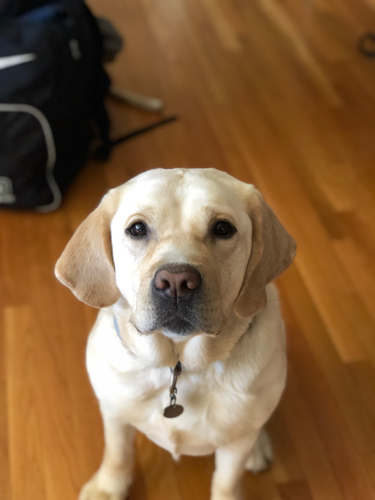

Romer

Roemer Henry Gagliardi- a lovable boy who lives for the beach and feeling the cool breeze in his hair. He adores cheese of any variety, chewing socks, and sitting his boney butt right on your foot. He has a distinct fear of abandonment, refuses to make eye contact, and still has not learned that the mail coming through the mail slot is not an intruder. He is very loved, and convinced that he is the head of the household.
Bella

This is our friend Bella, she lives in NY
Harper

This is Harper, also known as Heep and Fleeper, who lives in Fenton. An ideal day for Harper would begin with waking her owners up with a thorough face-licking. Afterwards, a playdate with the neighborhood dogs would ensue, followed by huge bowls of water and food. To end the night, she would sneak her way under the blankets with her favorite human and cuddle all night long. Harper doesn’t particularly like being told to get off the furniture—she knows she is a princess and insists to be treated as such.
Beau
This is our friend Beau and he lives in Rhode Island. He is a yellow lab and will be four this October! Beau loves going on boat rides but is very afraid of swimming...
Maizey
This is Maizey our Friend from Chicago.
TK
This is TK. That's short for Tama Kuri, which means Boy Dog. He's kind of dumb but loveable all the same. He's roly and sometimes people get a little turned off by the fact he has no fur but there's so much more to him than meets the eye.
Charlie
This is Charlie (although she commonly goes by char char). She is a 6 month old yellow Labrador retriever. She likes to go on shorts walks because she gets tired easily and does not like to be in a leash. She enjoys spending her days lounging on the family room couch (which she is not supposed to be on) and chewing up furniture. Ones of her other dislikes is being left alone, she likes being as close to other people as possible at all times.